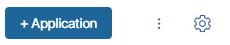
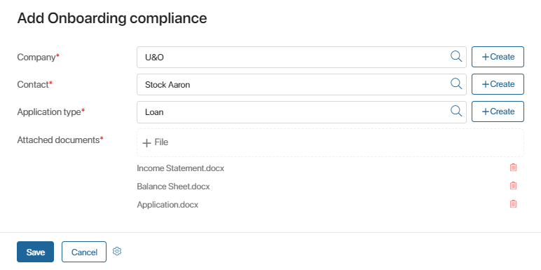
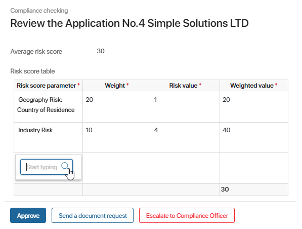
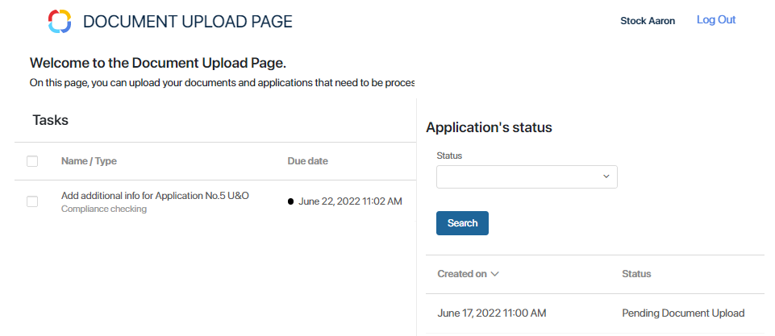
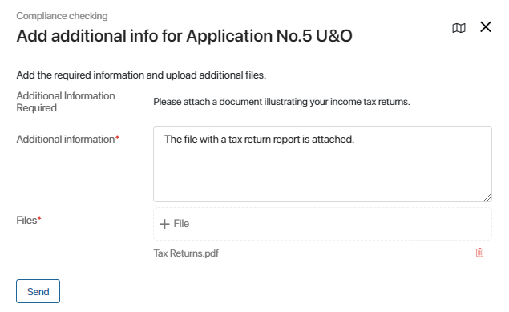

The Onboarding compliance app is designed to help you ensure that documents provided during client onboarding are compliant with company policies and applicable laws. The app automates the procedure of checking new customers’ applications for compliance issues. The app includes the Compliance checking business process that starts when a new application is added to the system.
Make sure you perform the initial steps before you use this solution. Otherwise, the business process will not work correctly.
Let’s consider the steps of application processing.
Add a new application
Customers’ applications can be added to the system in two ways:
- Manually. The application data is entered by an employee.
To create an application manually, open the Onboarding compliance app page. In the upper right corner, click the +Application button.

Fill out the application form:

Select the Company* and the Contact* from the corresponding apps of the CRM workspace. Specify the Application type*. Upload the customer’s documents. When you finish, click Save.
- Automatically. Applications can be added to the system as customers fill out a form on your website. This can be done if you set up an integration with an external service using APIs.
When a new application is added to the system, the Compliance checking business process starts. The first task in it is reviewing the application.
Review the application
The employee who added the application to the system needs to review it and fill out the Risk score table.

To enter the data, the employee needs to do the following:
- Click the empty cell in the Risk score parameter column, select a risk score parameter from the corresponding app, and click anywhere on the form. The parameter’s weight will be displayed in the corresponding column.
- Click the cell in the Risk value column and enter the number indicating how significant the risk is. Click anywhere on the form. The Weighted value column will be filled out automatically.
- Add all applicable risk score parameters to the table. The Average risk score will be displayed in the bottom cell of the Weighted value column and above the table.
When the table is filled out, the employee can complete the task by clicking one of the following buttons:
- Approve. The application will be assigned the Application approved status, and the Compliance checking business process will end.
- Send a document request. The customer will receive a document request on the Service Portal. This option is used if some necessary files are not attached to the application or don’t comply with the company’s policies.
- Escalate to Compliance Officer. The Compliance officer will get the task to review the document. This option is used if the risk score is high and the employee cannot approve the application without additional verification or if the employee encounters other issues. The employee has to leave a comment.
If the task is escalated, the Compliance officer is assigned a similar task to review the application. On the task form, under the Risk score table, the Compliance officer can see the comment left by the employee who added the application. The Compliance officer views the information in the Risk score table, optionally adding new parameters to it as described above.
The Compliance officer can complete the task by clicking on one of the following buttons:
- Send a document request. The customer will receive a document request on the Service Portal. This option is used if some of the customer’s files are not attached to the application or don’t comply with the company’s policies.
- Approve. The application will be assigned the Application approved status, and the Compliance checking business process will end.
- Reject. The application will be assigned the Application rejected status, and the Compliance checking process will end. The employee has to leave a comment.
Unlock the external user
The task to Unlock the external user is formed if a document request needs to be sent, but the customer’s account is locked. The task is assigned to the employee who added the application to the system.
Read about unlocking external users in the Lock an external user article.
When the user is unlocked, the employee needs to open the task form and click the Done button. A notification will be automatically sent to the customer’s email. The customer will be able to log in to the Service Portal to upload the documents.
Add the requested information and documents
If an employee sends a document request, the customer is assigned the task to upload the data on the Service Portal.
The customer gets a notification with information about the request by email. If the customer hasn’t been registered as an external user in the company, the email includes a personal invitation link. To activate the external user account, the user needs to click the link, enter the name, and set the password.
When the customer logs in to the portal, the Document Upload Page opens. On the left, the tasks are displayed. The section on the right shows the customer’s applications. It is possible to use a filter to search for applications.

To upload the requested documents or add the necessary information, the customer needs to click the Add additional info task in the list on the left. It may be needed to reload the page for the task to appear in the list. The deadline for the task is three business days.

The comment of the employee who made the request is displayed in the Additional Information Required field. In the Additional information* field, the customer writes the requested information or leaves a comment. In the Files* field, the missing or corrected documents need to be attached. After that, the customer clicks Send. The application is reviewed again.
Contact the customer
If the customer doesn’t add the missing data or documents in three business days, the employee who created the application in the system gets the task to contact the customer. The task form shows information about the application.
The employee contacts the customer and inquires why the requested documents were not added on the portal. If the customer still wants the application to be processed and is ready to upload the required documents to the Document Upload Page, the employee needs to click Success. The customer will be assigned the task on the Service Portal again.
If the application needs to be cancelled, the employee clicks Reject. In this case, a comment is required. The application is assigned the Application cancelled status, and the process ends.